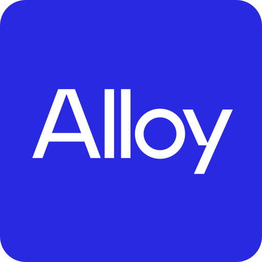

InnovArise · Studio OSAn AI approach for rapidly converting Grupo AG opportunities into advantaged external ventures and internal solutions.
At the June 4th onsite, Alloy laid out a two-phase path. With the recent team changes, we're collapsing it: phase two is being fast-tracked, now.
It rapidly evaluates every idea, determines the right path, internal or external, and builds the move that creates the most value for Grupo AG: a new venture, an internal build, or a buy, partner, or invest play.
These five levers are the corporate innovation toolkit. The studio researches, generates, and evaluates every idea, then recommends the lever that wins, reserving a NewCo for genuine white space, when the other four aren't as attractive.
The studio does everything AI can do alone, then hands the Venture Builders the half only a human can do, the real-world tests, and learns from what comes back.
Explore is continuous. The studio ingests context from both sides, shapes and assesses ideas, and hands the Board a decision-ready portfolio to route.
Each path runs its own two-pass loop: the AI drafts, the Venture Builder proves it in the real world, and the Board rules at the end of Build.
Past the Build gate each path ends differently — only NewCo enters Accelerate; Build-in-core hands into production and BPI is delivered to the team. Illustrative — the shape of the work, not a fixed playbook.
37 built to date, one for nearly every job in a venture build, and the swarm keeps growing as we test and refine over the next 30 days and beyond.
Before its daily briefing to the Venture Builder, the studio learns from how the Venture Builder edited its outputs and how the work was discussed, then upgrades its own agents, skills, and methodology. Small fixes are applied and logged; bigger changes are proposed for the Venture Builder to approve. It compounds: the studio you use next month is sharper than today's.
Four weeks to a build a working, world-class agentic studio that builds both internal and external ventures.